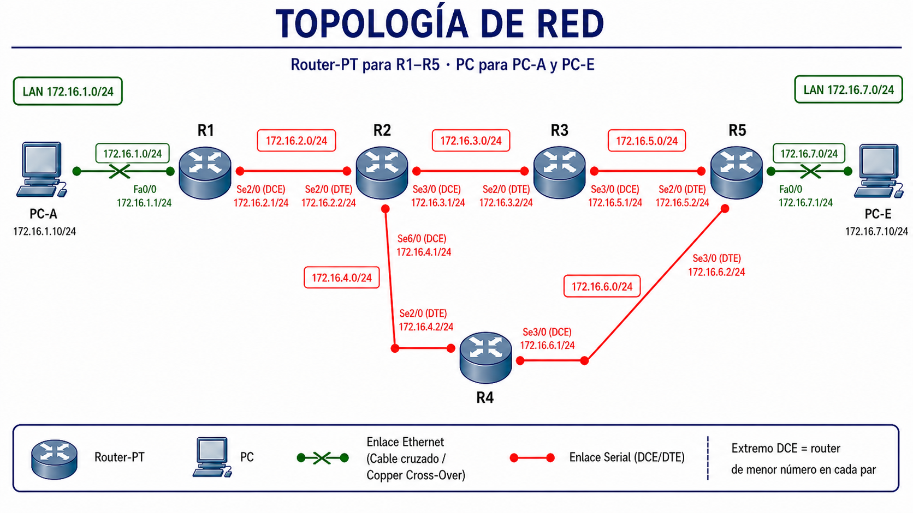

Actividad A2: RIPv1 funcional — primer protocolo de enrutamiento dinámico¶
- Unidad: UT6 — Enrutamiento dinámico
- Agrupamiento: parejas
- RA y CE: RA6 — Realiza tareas avanzadas de administración de red. Criterios:
- 6.1 Configura RIPv1
- Recursos:
- Ficheros de trabajo:
a2_ripv1_funcional.pkt(lo construyes tú en Packet Tracer) - Documentos que tienes que tener abiertos:
plantilla_apuntes_ut6_a2.docx— tus apuntes de A2; rellenas §3.1 versión inicial, §2.2 versión inicial y la columna RIPv1 de la tabla de observacionesplantilla_apuntes_ut6_a1.docx— los apuntes que entregaste en A1; los necesitas para copiar §1, §2.1 y la tabla de observaciones al inicio del fichero de A2plantilla_diario_ut6_a2.docx— tu diario de aprendizaje de A2plantilla_diario_ut6_a0.docx— tu diario de A0, para consultar tus Principios de uso de IA antes de formular prompts
- Material que entregas:
a2_ripv1_funcional.pktcon la topología configurada y RIPv1 activoplantilla_apuntes_ut6_a2.docxcon §1, §2.1 y la tabla copiados de A1, más §3.1 inicial, §2.2 inicial y la columna RIPv1 rellenasplantilla_diario_ut6_a2.docxcon la entrada A2 rellena
Cómo trabajar en parejas¶
Este lab se realiza en parejas conductor/navegante. Vamos a leer las instrucciones antes de empezar.
Roles¶
| Rol | Qué hace |
|---|---|
| Conductor | Escribe la configuración y ejecuta los pasos en Packet Tracer. Solo el conductor toca el teclado. |
| Navegante | Lee el enunciado en voz alta, propone cambios, detecta errores y formula las preguntas al conductor. |
Rotación¶
- Vamos a cambiar de rol al final de cada fase.
- Al rotar, el navegante ocupa el teclado y el conductor se convierte en navegante.
- Ambos deben poder explicar cualquier parte del trabajo al terminar el lab.
Entrega¶
Sube a CAMPUS los tres ficheros en la misma tarea: a2_ripv1_funcional.pkt, el documento de apuntes de A2 con las secciones nuevas rellenas, y el diario de aprendizaje con la entrada A2 rellena.
Checkpoint de repaso¶
Antes de abrir Packet Tracer, vamos a repasar en pareja los conceptos que vamos a necesitar. Si algo no sale, podemos usar la IA como tutor de repaso — pero aplicando los principios de A0.
En A1 vimos lo que cuesta mantener una red de 5 routers con enrutamiento estático: cada vez que cae un enlace o se añade una red, hay que tocar varios routers a mano. Hoy vamos a ver qué cambia cuando ese trabajo lo hace un protocolo dinámico: RIPv1.
En A1 trabajamos la técnica #1 — pedir explicación, no solución del manual de técnicas. Hoy la seguimos aplicando: los dos prompts guiados de la Fase 2 son ejemplos de esa técnica.
Las técnicas del manual no sustituyen los cuatro principios de A0: el prompt sigue necesitando contexto propio (P2), pedir proceso (P3) y ser verificable (P4).
Conceptos que vamos a necesitar en este lab
Enrutamiento dinámico — qué resuelve Un protocolo de enrutamiento dinámico es un programa que se ejecuta en cada router y se encarga de descubrir y mantener las rutas automáticamente. Los routers se comunican entre sí, comparten información sobre las redes que conocen y, cuando algo cambia (cae un enlace, aparece una red nueva), recalculan las rutas sin que el administrador tenga que tocar nada.
RIP — el primer protocolo de enrutamiento dinámico RIP (Routing Information Protocol) es uno de los protocolos dinámicos más antiguos y más sencillos. Cada router con RIP envía a sus vecinos directos, cada 30 segundos, la lista completa de redes que conoce y a cuántos saltos están. Los vecinos aprenden esas redes, suman 1 al número de saltos y, a su vez, las anuncian a sus propios vecinos. Así, sin que nadie configure rutas a mano, todos los routers acaban sabiendo cómo llegar a todas las redes.
RIPv1 vs. RIPv2 RIP tiene dos versiones. RIPv1 es la original (1988): muy sencilla, con limitaciones que se notan en redes modernas — pero no las vamos a ver hoy. RIPv2 (1998) arregla varias de esas limitaciones; entra en A4. Hoy trabajamos con RIPv1 porque es el más fácil de entender y porque sirve perfectamente sobre la red sencilla del lab.
router rip y network
Para activar RIP en un router se entra al modo de configuración con router rip. Después se le indica con uno o varios network <dirección> en qué redes queremos que funcione. La dirección que se pone en network tiene que ser la dirección classful de la red (la red completa de clase A, B o C a la que pertenece la interfaz). Hoy todas las interfaces del lab están dentro de la clase B 172.16.0.0/16, así que basta con un único network 172.16.0.0 por router. RIP queda entonces activo en todas las interfaces de ese router.
Métrica de RIP — el contador de saltos RIP mide el coste de una ruta en saltos (hops): cuántos routers intermedios hay entre el origen y el destino. El máximo es 15; una ruta con métrica 16 se considera inalcanzable. Esta limitación se nota en redes muy grandes, pero para los 5 routers de hoy queda muy lejos del límite.
Convergencia Cuando un protocolo dinámico ha terminado de propagar la información sobre la red y todos los routers tienen tablas de rutas coherentes, decimos que la red ha convergido. En RIPv1, la convergencia inicial tarda unos 30-60 segundos en una red pequeña como la del lab. Si después algo cambia (cae un enlace), el protocolo necesita un tiempo similar para volver a converger.
show ip route — distinguir C, S y R
Ya conocemos C (connected) y S (static) de A1. Hoy aparece R: ruta aprendida por RIP. La distancia administrativa de RIP es 120 y la métrica son los saltos; aparecerán entre corchetes en la línea de la ruta, igual que en A1 vimos [1/0] para las estáticas.
¿No te salen los conceptos solos?
Abre la IA y pregúntale. Ejemplo de prompt útil:
"Tengo una red con 5 routers Cisco en Packet Tracer y quiero entender cómo funciona RIPv1: cómo se envían los routers la información, cada cuánto, qué hace cada uno cuando recibe una actualización, y en qué momento se considera que la red ha convergido. Explícamelo paso a paso, sin darme aún los comandos de configuración."
Ese prompt funciona porque da contexto (Packet Tracer, 5 routers) y pide el mecanismo, no la solución al lab.
Topología de partida¶
Es la misma topología que usaste en A1: 5 routers en malla parcial con un camino principal R1→R2→R3→R5 y un camino alternativo R2→R4→R5. Lo único que cambia es el direccionamiento: en A1 era una mezcla de clases C y subredes /30; en esta actividad usaremos redes con máscara /24.
Construye la topología en Packet Tracer (o reutiliza la que ya tienes de A1, reasignando IPs). Guarda el fichero como a2_ripv1_funcional.pkt.

Dispositivos:
| Dispositivo | Modelo |
|---|---|
| R1, R2, R3, R4, R5 | Router-PT |
| PC-A, PC-E | PC |
Enlace PC-A ↔ R1 y R5 ↔ PC-E — cable cruzado (Copper Cross-Over). PC y router usan el mismo tipo de interfaz, por eso no vale el directo. Enlaces entre routers — cable serial (Serial DCE/DTE). El extremo DCE en el router de menor número de cada par.
Recordatorio: R2 tiene 3 puertos serie
En A1 añadiste a R2 una tarjeta PT-ROUTER-NM-1S extra para tener un tercer puerto (Se6/0), porque conecta con R1, R3 y R4. Si reutilizas la topología de A1, no tienes que tocar nada. Si la construyes desde cero, repite el procedimiento: clic en R2 → pestaña Physical → apagar → arrastrar el módulo → encender.
Direccionamiento — una /24 por enlace dentro de la clase B 172.16.0.0/16:
| Enlace | Red | R (extremo izq.) | R (extremo der.) |
|---|---|---|---|
| PC-A ↔ R1 | 172.16.1.0/24 | R1: Fa0/0 → 172.16.1.1/24 | PC-A → 172.16.1.10/24 |
| R1 ↔ R2 | 172.16.2.0/24 | R1: Se2/0 → 172.16.2.1/24 | R2: Se2/0 → 172.16.2.2/24 |
| R2 ↔ R3 | 172.16.3.0/24 | R2: Se3/0 → 172.16.3.1/24 | R3: Se2/0 → 172.16.3.2/24 |
| R2 ↔ R4 | 172.16.4.0/24 | R2: Se6/0 → 172.16.4.1/24 | R4: Se2/0 → 172.16.4.2/24 |
| R3 ↔ R5 | 172.16.5.0/24 | R3: Se3/0 → 172.16.5.1/24 | R5: Se2/0 → 172.16.5.2/24 |
| R4 ↔ R5 | 172.16.6.0/24 | R4: Se3/0 → 172.16.6.1/24 | R5: Se3/0 → 172.16.6.2/24 |
| R5 ↔ PC-E | 172.16.7.0/24 | R5: Fa0/0 → 172.16.7.1/24 | PC-E → 172.16.7.10/24 |
Gateway por defecto en los PCs: PC-A → 172.16.1.1; PC-E → 172.16.7.1.
Solo direccionamiento — no configures rutas estáticas
En este lab solo configuras las direcciones IP de las interfaces y la gateway de los PCs. No añadas ningún ip route ... en ningún router. Lo que vas a comprobar es justo si RIPv1 consigue por sí solo construir las rutas necesarias para llegar de PC-A a PC-E. Si añades estáticas, ocultas el resultado del experimento: habría conectividad por las rutas manuales, no gracias a RIP.
Si reutilizas el .pkt de A1: borra primero las rutas estáticas viejas
Si abres tu .pkt de A1 y solo cambias el direccionamiento, las 12 rutas estáticas que configuraste en A1 siguen ahí. Si las dejas y activas RIPv1 encima, no sabrás si la conectividad viene del estático que sobró o del dinámico que acabas de configurar — y el experimento de hoy queda contaminado.
Antes de cambiar IPs, en cada router con estáticas (R1, R2, R3, R5):
- Lista las que tienes con
R# show running-config | include ip route. - Bórralas una a una con
R(config)# no ip route <misma sintaxis>. Por ejemplo:no ip route 10.0.0.4 255.255.255.252 10.0.0.2. - Vuelve a hacer
show ip routey confirma que solo aparecen rutasC(directly connected). NingunaS.
Recién entonces cambia las IPs al direccionamiento /24 nuevo y empieza el lab.
Antes de seguir: verifica el direccionamiento directo
Comprueba que los pings entre extremos de cada enlace funcionan: PC-A ↔ R1 Fa0/0, R1 Se2/0 ↔ R2 Se2/0, R2 Se3/0 ↔ R3 Se2/0, R2 Se6/0 ↔ R4 Se2/0, R3 Se3/0 ↔ R5 Se2/0, R4 Se3/0 ↔ R5 Se3/0, R5 Fa0/0 ↔ PC-E. Los nombres de las tarjetas de red no tienen por qué coincidir exactamente, lo importante es de dónde a dónde conectan.
En este punto el ping de PC-A a PC-E todavía no funciona — y eso es normal, porque aún no hay rutas a redes remotas. Esa es la tarea que delegarás en RIPv1 en la Fase 1. Si alguno de los pings directos falla, revisa IPs y máscaras antes de continuar.
Fase 1 — Sin IA¶
En esta fase no se usa la IA
Cierra o ignora la IA durante toda la Fase 1. Si tienes dudas, anótalas para la Fase 2. El objetivo es que veas RIPv1 funcionando con tus propias manos antes de pedirle explicaciones a nadie.
Objetivo¶
Configurar RIPv1 en los 5 routers, comprobar que la red converge sola y comparar el resultado con lo que tuviste que hacer en A1 con rutas estáticas.
Tarea¶
Sigue los pasos en orden.
Paso 1 — Antes de configurar nada, recuerda lo de A1
Vuelve a tu plantilla del diario A1 (la que entregaste). Anota en el diario A2, apartado "Antes de empezar (fase sin IA)", campo "Recordatorio de A1":
- ¿Cuántos comandos
ip routeconfiguraste en total para el camino activo en A1? (mira la tabla del lab anterior) - Cuando se cayó el enlace R2-R3, ¿cuántos comandos extra tuviste que añadir para recuperar la conectividad por el camino alternativo R2-R4-R5?
Este será tu punto de comparación con lo que harás hoy.
Paso 2 — Activar RIPv1 en los 5 routers
Entra en cada router y activa RIPv1. La configuración es la misma en los cinco:
Router# configure terminal
Router(config)# router rip
Router(config-router)# network 172.16.0.0
Router(config-router)# end
Sí: un único comando network por router, los cinco con la misma línea, aunque la topología tiene siete subredes /24 distintas. En el siguiente paso verás que cada router acaba conociendo todas esas subredes sin que nadie las haya enumerado. ¿Cómo es posible que con network 172.16.0.0 RIP acabe trabajando en todas las interfaces y aprendiendo subredes /24 individuales? Tenlo presente: es justo lo que llevarás a la IA en la Fase 2.
Anota en el diario, entrada A2, apartado «Antes de empezar (fase sin IA)», campo «Comandos que añadí para activar RIP»:
"En total, para activar RIP en los 5 routers he ejecutado ____ comandos
network. En A1, para hacer el equivalente con estáticas, había ejecutado ____ comandosip route."
Paso 3 — Esperar convergencia y observar la tabla de rutas
RIPv1 envía actualizaciones cada 30 segundos. Espera un minuto o adelanta el tiempo en PT después de configurar el último router.
Entra en R2 y ejecuta:
Deberías ver algo parecido a esto (las líneas exactas dependen de qué interfaces tengas activas):
R2# show ip route
Codes: C - connected, S - static, R - RIP ...
Gateway of last resort is not set
172.16.0.0/24 is subnetted, 7 subnets
R 172.16.1.0 [120/1] via 172.16.2.1, 00:00:12, Serial2/0
C 172.16.2.0 is directly connected, Serial2/0
C 172.16.3.0 is directly connected, Serial3/0
C 172.16.4.0 is directly connected, Serial6/0
R 172.16.5.0 [120/1] via 172.16.3.2, 00:00:12, Serial3/0
R 172.16.6.0 [120/1] via 172.16.4.2, 00:00:12, Serial6/0
R 172.16.7.0 [120/2] via 172.16.3.2, 00:00:12, Serial3/0
[120/2] via 172.16.4.2, 00:00:12, Serial6/0
Anota en el diario, entrada A2, apartado «Antes de empezar (fase sin IA)», campo «Lo que vi en show ip route de R2»:
- ¿Cuántas líneas empiezan por
R? Esas son las redes que R2 ha aprendido sin que nadie las configurara. - Para la red 172.16.7.0 (la LAN de PC-E), ¿qué métrica aparece entre corchetes? El primer número es la distancia administrativa de RIP (120); el segundo es la métrica en saltos.
- ¿Aparecen algunas redes con dos siguientes saltos? ¿Cuáles? ¿Por qué?
Paso 4 — Comprobar conectividad de extremo a extremo
Lanza un ping desde PC-A hacia PC-E:
Esta vez debería funcionar sin haber configurado ni una sola ruta a mano. Anota en el diario, entrada A2, apartado «Antes de empezar (fase sin IA)», campo «Resultado del ping y del tracert PC-A → PC-E», si llegó el ping.
Lanza también un tracert:
En el mismo campo «Resultado del ping y del tracert PC-A → PC-E» del diario, anota los routers intermedios que ves, si el camino pasa por R3 o por R4, y tu hipótesis de por qué el protocolo eligió ese camino y no el otro.
Paso 5 — Apagar el enlace R2-R3 y ver la convergencia automática
Ahora el experimento clave: vamos a repetir lo que en A1 te obligó a tocar varios routers a mano. Apaga la interfaz R2 que conecta hacia R3:
R2# configure terminal
R2(config)# interface Serial3/0 ! la que conecta R2 con R3 — usa la tuya si difiere
R2(config-if)# shutdown
R2(config-if)# end
No añadas ninguna ruta. Espera un minuto para que RIP detecte el cambio y converja.
Mientras esperas, lanza un ping continuo desde PC-A a PC-E con la opción -t (envía paquetes hasta que lo paras tú con Ctrl+C):
Verás cómo durante un rato fallan los paquetes (mientras RIP detecta el cambio) y luego vuelven a funcionar solos, sin tocar la configuración. Pulsa Ctrl+C para detener el ping cuando hayas visto la transición.
Una vez recuperada la conectividad, lanza otra vez tracert desde PC-A a PC-E. Anota en el diario, entrada A2, apartado «Antes de empezar (fase sin IA)», campo «Comandos que añadí para recuperar la conectividad», el camino del tracert tras la convergencia: debería pasar ahora por R4 en lugar de R3.
Anota en el diario, entrada A2, apartado «Antes de empezar (fase sin IA)», campo «Comandos que añadí para recuperar la conectividad»:
"Para recuperar el ping PC-A → PC-E después de la caída de R2-R3 he tenido que añadir ____ comandos en total. En A1 tuve que añadir ____ comandos para hacer lo mismo."
(Pista: en A2 el número que va en el primer hueco es cero.)
Anota en el diario — entrada A2, apartado «Antes de empezar (fase sin IA)»
Antes de pasar a la Fase 2, rellena estos campos:
- Recordatorio de A1 (Paso 1).
- Comandos que añadí para activar RIP (Paso 2): el total de
networkejecutados en los 5 routers. - Lo que vi en
show ip route(Paso 3). - Resultado del ping y del
tracertPC-A → PC-E (Paso 4). - Comandos que añadí para recuperar la conectividad (Paso 5).
- Dificultades que encontré: una por línea, lo más concreto posible.
Fase 2 — IA como tutor socrático¶
Ahora sí puedes usar la IA. Usa los prompts en orden y anota las respuestas en el diario.
Los dos prompts guiados aplican la técnica #1 del manual (la misma que ya practicaste en A1). En el Prompt 3 te toca a ti formular el tuyo.
Objetivo¶
Entender lo que acaba de pasar: cómo es posible que R2 conozca rutas hacia redes que nadie configuró ahí, y cómo recalcula automáticamente cuando un enlace cae.
Prompts que vas a hacer¶
No modifiques los prompts para obtener la solución directa
Si la IA te da directamente la configuración o las rutas, ignora esa parte. Lo que buscas es entender el mecanismo.
Prompt 1 — Cómo es que basta un solo network (técnica #1 del manual de uso de la IA)
Esta es la pregunta que dejaste pendiente en el Paso 2 de la Fase 1. Vuelve a la salida de show ip route que anotaste en el Paso 3 y pregúntale a la IA:
"En Packet Tracer tengo 5 routers en malla parcial con RIPv1 activo. Todos los enlaces están dentro de la clase B 172.16.0.0/16, con una subred /24 distinta por enlace (172.16.1.0/24 hasta 172.16.7.0/24). En cada router he ejecutado un único comando:
network 172.16.0.0. Tengo dos cosas que no termino de entender:1. ¿Cómo es posible que con esa única línea RIP acabe funcionando en todas las interfaces de cada router (Fa0/0 + las serie), si yo no las he enumerado una a una?
2. Cuando hago
show ip routeen R2, veo una entradaRseparada por cada subred remota (172.16.1.0, 172.16.5.0, 172.16.6.0, 172.16.7.0), todas con máscara /24. Pero yo solo había anunciado 172.16.0.0. ¿Por qué la tabla no muestra una sola entrada agrupada para toda la 172.16.0.0/16? ¿De dónde sale el detalle de las subredes individuales?Explícame el mecanismo del protocolo paso a paso. No me des comandos de configuración."
Anota en el diario, entrada A2, apartado «Fase 2 — IA tutor socrático», Prompt 1 (campos «Qué me devolvió la IA — punto 1» y «Qué me devolvió la IA — punto 2»), lo que te explicó en cada uno y compáralo con lo que habías observado.
Prompt 2 — Qué pasa cuando un enlace cae (técnica #1 del manual)
"En el mismo lab, he apagado el enlace R2-R3 con
shutdownen R2. Sin tocar nada más, el ping PC-A → PC-E dejó de funcionar durante un rato y luego volvió a funcionar por el camino alternativo R2-R4-R5. Explícame qué hizo RIP en ese intervalo: cómo detectó la caída, cómo se enteraron los demás routers, qué cálculo hicieron para elegir el nuevo camino, y por qué tardó lo que tardó."
Anota en el diario, entrada A2, apartado «Fase 2 — IA tutor socrático», Prompt 2 (campos «Qué me devolvió la IA» y «Qué verifiqué»), la explicación de la IA y compárala con lo que viste en pantalla.
Prompt 3 — El tuyo
Ya has hecho dos prompts guiados. Ahora formula uno propio sobre cualquier aspecto del lab que todavía no tengas claro.
Antes de escribirlo, repasa los cuatro principios de A0:
- ¿Estás pidiendo entender, no que te resuelvan algo?
- ¿Has incluido contexto de tu lab (los 5 routers, el direccionamiento /24, lo que viste en
show ip route)? - ¿Pides proceso o explicación, no el resultado final?
- ¿Puedes verificar lo que te diga?
Anota en el diario, entrada A2, apartado «Fase 2 — IA tutor socrático», Prompt 3, el prompt que escribiste, la respuesta de la IA y qué verificaste.
Prompts buenos vs. malos para este lab¶
| Malo | Por qué falla | Bueno |
|---|---|---|
"¿qué es RIP?" |
Genérico, respuesta de Wikipedia. | "Tengo RIPv1 activo en 5 routers en malla parcial. En R2 veo una ruta R con dos siguientes saltos hacia la misma red. ¿Por qué pasa eso y qué hace el router con el tráfico?" |
"¿cómo configuro RIP?" |
Pide receta, no comprensión. | "He puestonetwork 172.16.0.0en mis 5 routers y todos se enteran de todas las redes. ¿Cómo decide cada router en qué interfaces enviar las actualizaciones de RIP a partir de ese único comando?" |
"explícame la convergencia" |
Sin contexto propio. | "En mi lab apagué un enlace y el ping tardó unos 60 segundos en volver. ¿Por qué tarda eso? ¿Qué ocurre exactamente en cada router durante ese minuto?" |
Verifica lo que te diga la IA
Si la IA menciona valores numéricos concretos (temporizadores, métricas, distancia administrativa), contrástalos con lo que observaste en tu tabla de rutas real. Anota en el diario, entrada A2, apartado «Errores que detecté en respuestas de la IA», cualquier discrepancia.
Anota en el diario — Fase 2
Rellena en tu diario (entrada A2, apartado "Prompts que usé"):
- Los dos prompts guiados con tus valores reales sustituidos. Los dos aplican la técnica #1 del manual.
- El Prompt 3 que construiste tú. Indica qué principio de A0 fue el más importante para formularlo (P1 entender, P2 contexto, P3 proceso, P4 verificable).
- Qué te devolvió la IA en cada uno (una línea por prompt).
- Qué parte de cada respuesta verificaste y cómo.
Fase 3 — Documentar lo aprendido¶
Objetivo¶
Sintetizar en los apuntes lo que acabas de descubrir, comparando explícitamente con A1.
Tarea¶
Paso 6 — Arrancar el fichero de apuntes A2 y rellenar las secciones nuevas
Abre plantilla_apuntes_ut6_a2.docx. La plantilla viene con espacio para las secciones nuevas (§3.1 inicial y §2.2 inicial). Antes de rellenarlas, copia al inicio de este fichero todo el contenido de tu plantilla_apuntes_ut6_a1.docx: §1.1, §1.2, §2.1 y la tabla de observaciones del estático. Al final de la unidad tendrás un único fichero (el de A6) con todas las secciones acumuladas.
Paso 7 — Rellenar la columna RIPv1 de la tabla de observaciones
La tabla de observaciones que has copiado de A1 tiene dos filas (escalabilidad y convergencia) y una sola columna ("Estático"). En A2 le añades una columna nueva: RIPv1.
| Criterio | Estático | RIPv1 |
|---|---|---|
| Escalabilidad — qué pasa cuando la red crece | (lo que escribiste en A1) | |
| Convergencia — cuánto tarda la red en recuperarse | (lo que escribiste en A1) |
Rellena en los apuntes (plantilla_apuntes_ut6_a2.docx), sección «Tabla de observaciones», las dos celdas de la columna RIPv1 con tus palabras, usando los datos concretos del lab de hoy:
- Escalabilidad: ¿cuántos comandos hubo que escribir hoy frente a A1? ¿Qué pasaría si fueran 50 routers?
- Convergencia: ¿cuánto tardó RIP en recuperar la conectividad cuando cayó el enlace? ¿Hubo que tocar algo a mano?
Más adelante, en A4 y A5, ampliarás esta tabla con una columna nueva por cada protocolo (RIPv2 y OSPF). Hoy solo trabajas con RIPv1.
Anota en los apuntes — tras la Fase 3
Rellena estas secciones en tu documento de apuntes (plantilla_apuntes_ut6_a2.docx):
§3.1 versión inicial — RIPv1: cómo funciona (máx. 150 palabras)
Explica con tus palabras qué es RIPv1, cómo funciona (vector de distancia, anuncios periódicos, métrica de saltos), y qué efecto observaste en tu lab (las rutas R que aparecieron sin configurarlas, la convergencia automática al apagar el enlace). Pon como ejemplo una línea concreta de tu salida de show ip route (con tus IPs reales).
Importante: en A3 vas a ampliar esta sección añadiendo las limitaciones de RIPv1. Hoy no las menciones — escribe solo lo que has visto funcionar.
§2.2 versión inicial — Métrica (máx. 80 palabras)
Explica qué es la métrica en un protocolo de enrutamiento dinámico. Pon como ejemplo la métrica de RIP (saltos): qué cuenta exactamente, cuál es el máximo y qué significa alcanzar ese máximo. Haz referencia a lo que viste entre corchetes en show ip route ([120/1], [120/2], etc.) y explica cada número.
Entrada A2 del diario de aprendizaje¶
Esta sección resume lo que tienes que tener relleno en el diario al terminar la actividad.
Fase sin IA¶
- Recordatorio de A1 (Paso 1): número de comandos
ip routedel lab anterior. - Comandos que añadiste para activar RIP (Paso 2).
- Lo que viste en
show ip routede R2 (Paso 3). - Resultado del ping y del
tracertPC-A → PC-E (Paso 4). - Comandos que añadiste para recuperar la conectividad tras la caída del enlace (Paso 5).
- Dificultades o bloqueos que tuviste.
Prompts que usé y por qué los formulé así¶
Los tres prompts literales (con tus datos reales). Los dos guiados aplican la técnica #1 del manual; en el Prompt 3 (el tuyo) indica qué principio de A0 te guio. Para cada uno, qué te devolvió la IA y qué verificaste.
Errores que detecté en respuestas de la IA¶
Si la IA te dijo algo incorrecto (un valor equivocado, un comando inexistente, una explicación al revés), anótalo:
- Qué dijo la IA.
- Qué comprobaste.
- Por qué crees que se equivocó.
Si no detectaste ningún error, escribe: "No detecté errores en las respuestas, pero debo reconocer que no las verifiqué a fondo en: ____."
Reflexión final¶
Al terminar A2 deberías poder decir...
- Sé qué es un protocolo de enrutamiento dinámico y qué resuelve respecto al estático: lo he visto en mis propias manos sobre la misma topología que reparé a mano en A1.
- Sé configurar RIPv1 en un router con un solo comando
network. - Entiendo cómo se construye una tabla de rutas vía RIP: los vecinos comparten lo que conocen y cada router suma 1 al hop count.
- Sé qué significan los números entre corchetes en una ruta
R(distancia administrativa 120 y métrica en saltos). - He visto cómo RIPv1 recupera la conectividad solo cuando cae un enlace, sin tocar la configuración.
- He rellenado §3.1 y §2.2 de mis apuntes con mis propias palabras y los datos de mi lab.
- He registrado en el diario los prompts que hice, cómo los formulé y qué verifiqué.
Checklist de entrega¶
- He construido la topología (la misma de A1) con direccionamiento /24 uniforme dentro de 172.16.0.0/16 y gateway por defecto en los PCs.
- He verificado la conectividad directa entre vecinos antes de activar RIP.
- He activado RIPv1 con un único
network 172.16.0.0en los 5 routers. - He esperado a la convergencia y comprobado en R2 las rutas
Raprendidas. - He hecho ping y
tracertPC-A → PC-E con la red intacta y he documentado el camino. - He apagado el enlace R2-R3 y comprobado que RIP recupera la conectividad sin que toque ningún router.
- He hecho los dos prompts guiados de la Fase 2 con mis datos reales y formulado el Prompt 3 propio. Todo anotado en el diario.
- He copiado al inicio de
plantilla_apuntes_ut6_a2.docxel contenido de A1 (§1, §2.1 y la tabla). - He rellenado §3.1 inicial y §2.2 inicial en el documento de apuntes.
- He completado la columna RIPv1 de la tabla de observaciones (escalabilidad y convergencia).
- He rellenado la entrada A2 del diario: fase sin IA + prompts + errores detectados.
- Subo a CAMPUS:
a2_ripv1_funcional.pkt+plantilla_apuntes_ut6_a2.docx+plantilla_diario_ut6_a2.docx.